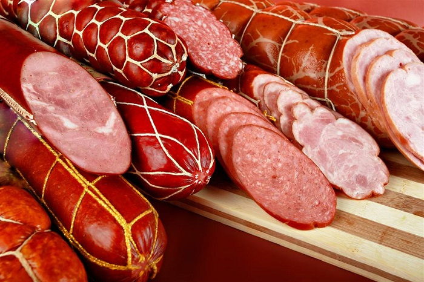

|  |
|
Ценность колбасных изделий, в первую очередь - ценность пищевая. Она главным образом обусловлена химическим составом исходного сырья (мяса). Мясо является ценным продуктом питания. Его состав зависит от вида животного, его породы, пола, возраста, упитанности, а также от предубойного состояния животного, степени обескровливания и условий хранения мяса. Пищевая ценность мяса определяется соотношением тканей, входящих его состав, который при изготовлении различных продуктов может быть изменен. Пищевая ценность тканей обуславливается биологическим значением его компонентов (наиболее ценны в этом отношении мышечная и жировая ткани). Белки мяса как продукты питания характеризуются высокой способностью компенсировать непрерывную потерю белка организмом в результате постоянного распада тканевых белков в процессе обмена веществ.Жиры говядины, свинины и баранины состоят главным образом из пальмитиновой, стеариновой, пальмолеиновой, олеиновой, линолевой и небольшого количества аражидоновой и линоленовой кислот. Важное значение имеют ненасыщенные жирные кислоты. Наиболее необходимыми из них являются линоленовая, линолевая и арахидоновая, поскольку они не синтезируются организмом человека. Животные жиры содержат жирорастворимые витамины A, D, E, K, выполняя функцию растворяющего агента. Углеводы мяса представлены в основном гликогеном, количество которого составляет 0,6-2% (в наибольшем количестве содержится в печени). Гликоген - запасающее вещество, служит для наполнения крови глюкозой, образующейся из него под действием ферментов. Гликоген при интенсивной работе мышц превращается в молочную кислоту, которая в печени переходит в крахмал. Экстрактивные вещества мяса придают ему специфический вкус и аромат, пенность и набухаемость. |